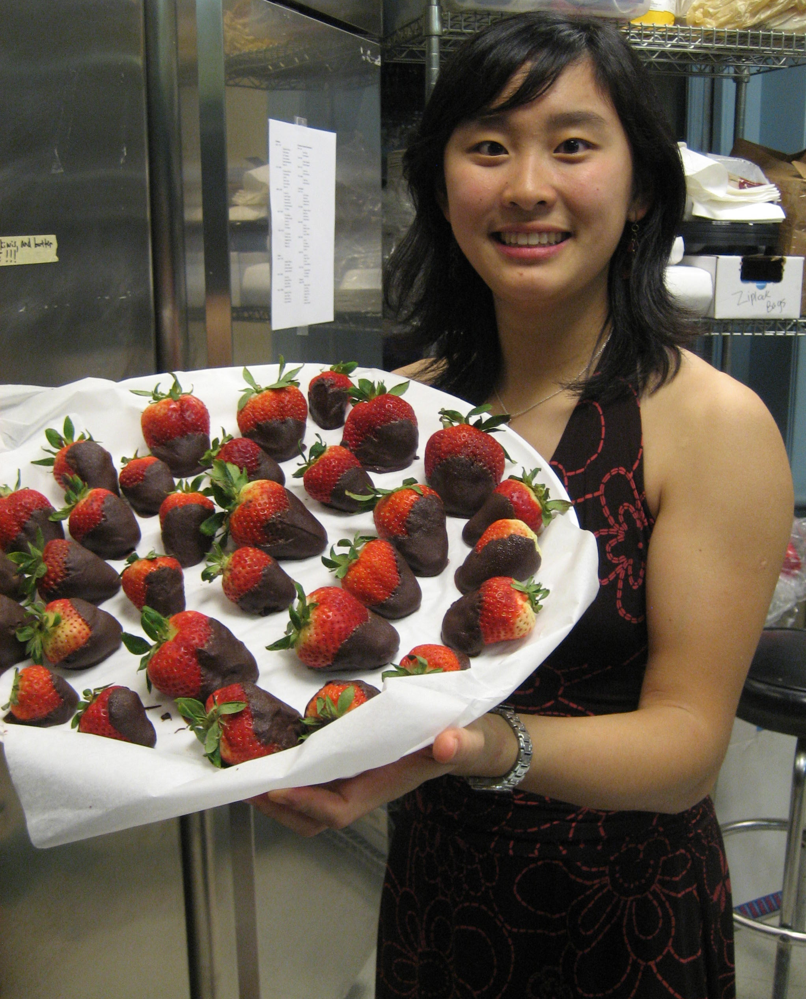
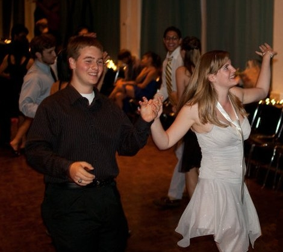
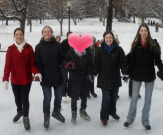

Alpha Chis love spending time together! Pledge classes regularly meet up whether to visit the MFA, watch movies, or just go out to dine at the excellent Boston restaurants. We also love getting to know the MIT community! Each year we hold Fondue at our mansion and invite the MIT campus to attend, including professors, TAs, coaches, and friends. Read more below about our formals, semi-formals and mixer events.
Fondue
Fondue is an annual classy open-house event hosted by Alpha Chi Omega to create and foster relationships between MIT students and faculty members. It is traditionally a three-hour event, with the first hour dedicated to faculty and administrators as well as their families, while the remaining portion of the event functions as a chance for AXO sisters to showcase the beautiful mansion to MIT students and other members of the MIT community.
This year, the faculty hour was also an opportunity for sisters to thank and honor the faculty and administrators who have endeavored to improve the quality of student life and academic development at MIT. This year's honored guests were Stephen Immerman (Senior Associate Dean for Student Development), Robert Randolph (Chaplain to the Institute), and Kaya Miller (Assistant Dean for FSILGs and Residence Life Programs). Throughout the entire three-hour event, the Swedish Jazz Spectrum, an MIT jazz band, performed for our guests. In addition, delicious chocolate-dipped desserts were served as students and faculty members mingle and engage in casual conversation.
Sophomore Semi-Formal
Every year the sophomore class plans a fun fall semi-formal for the entire sorority to attend. A traditionally blind-date event, each year the semi-formal is held in a different location around Boston. Whether attending a comedy show at the Boston Improv Asylum or learning the Cha-Cha with MIT's Ballroom Dance Team, sisters have a great time getting to know each other and their dates!
Carnation Ball

In the spring, we hold our formal Carnation Ball. This event is a great break from stressful classes and a chance for our classy sisters to get dressed up for a night of fun, dancing, and hors d'œuvres!
Fraternity and Sorority Mixers
Our social chairs organize several mixers each semester so that our sisters can get to know other MIT fraternities and sororities. Past mixers have included such activities as bowling, pumpkin carving, murder mysteries, bbqs, and cooking. Mixers are a great way for our sisters to bond with each other and to get to know the rest of the MIT community. If your sorority or fraternity is interested holding a mixer with our chapter please contact our social chairs.